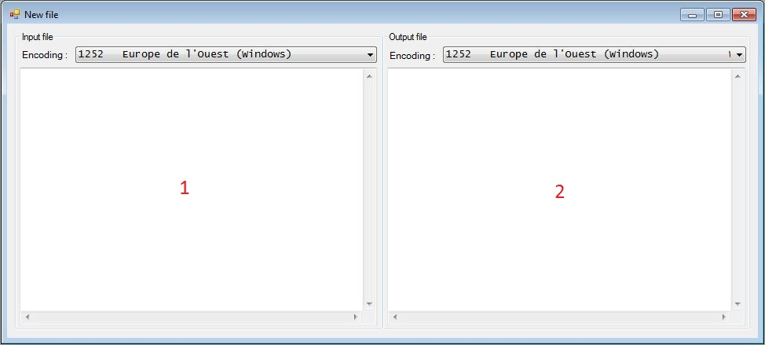
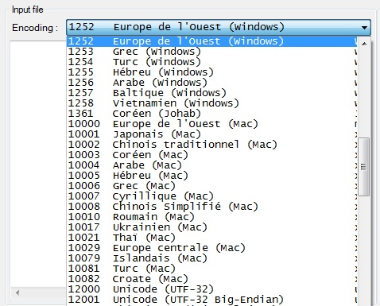

The Gab Encoding Converter document window is divided into two panes, as you can see on the picture below :
Each pane is surrounded by a combo box where you can select an encoding :
There is a textbox under the combobox. This is where the content of the file appears.
The source file pane is where the file you just opened will be displayed. The encoding of the file should be detected automatically, but the detection is not perfect and it could be wrong. You can then change the encoding of the source file using the combo box. You will see in real time how your file appears depending on the selected encoding.
Once you are happy with the encoding of the source file, you can then choose the encoding of the destination file using its own combo box. Again, you can see in real time how your file appears with the selected encoding. By default, the selected encoding is the same as the source file detected encoding.